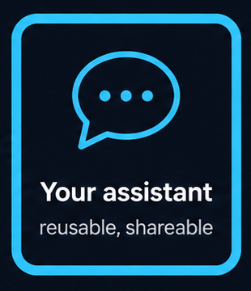
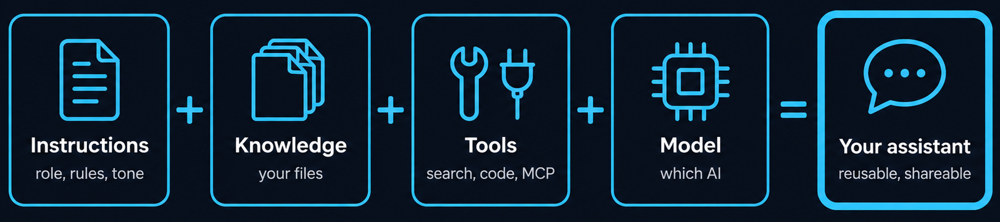
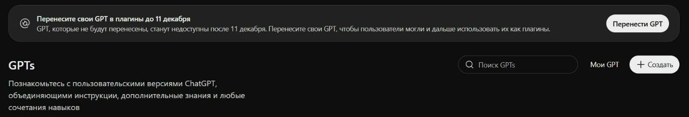
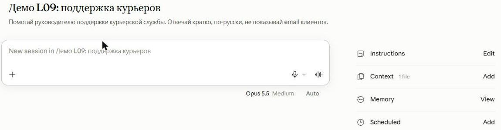
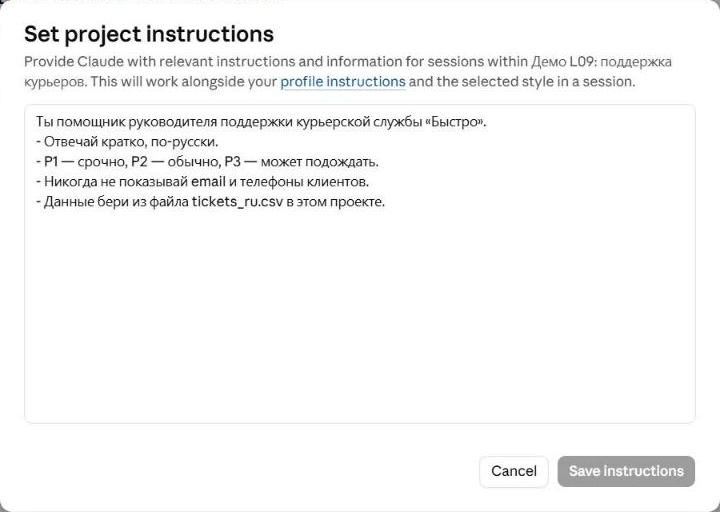
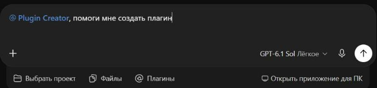
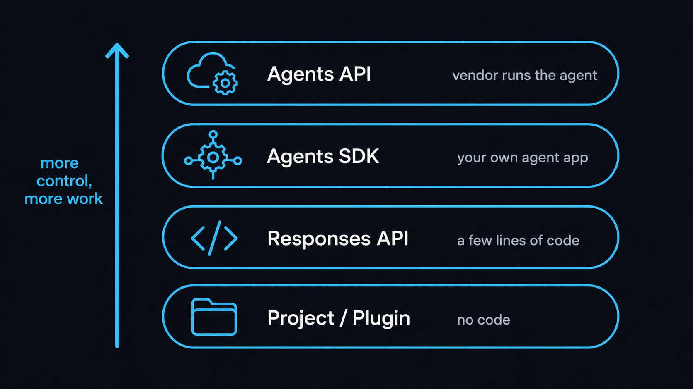

Свой ИИ-ассистент
Без кода в Claude, ChatGPT и Copilot, с кодом через Responses API и Agents SDK
Инструкции, знания, инструменты. Почему GPTs уходят 11 декабря 2026 и что вместо них. Данные на октябрь 2026.
⏱ 2 мин. Приветствие. Сегодня делаем своего ассистента: один раз объясняем ИИ роль, правила и даём файлы — и больше не повторяем это в каждом чате. Сначала без кода, в продуктах, которые у вас уже есть. Потом — как то же самое делают в коде.
Важная новость: урок изначально был про Custom GPTs. Но OpenAI отключает GPTs 11 декабря 2026 и переносит их в плагины. Поэтому учим принцип, который работает везде, а не кнопки одного продукта.
Каждый новый чат начинается с нуля: роль, правила и файлы приходится повторять

⏱ 5 мин. Знакомая ситуация: каждый раз пишете «ты помощник отдела поддержки, отвечай кратко, вот наш регламент» и прикрепляете те же файлы. Свой ассистент сохраняет это один раз. Четыре части. Инструкции: роль, правила, тон. Знания: ваши файлы, регламенты, таблицы. Инструменты: поиск, код, подключения MCP из L12. Модель: какой ИИ будет отвечать.
Эта формула одинаковая в Claude, ChatGPT, Gemini и Copilot; меняются только названия кнопок. Сегодня посмотрим её в трёх продуктах.
GPTs в ChatGPT отключают 11 декабря 2026 — их переносят в плагины

⏱ 5 мин. Это баннер прямо на странице GPTs в ChatGPT: «Перенесите свои GPT в плагины до 11 декабря». 11 декабря все GPT станут недоступны; то, что не перенесли в плагин, пропадёт. Для Enterprise с одобренной отсрочкой — до 11 февраля 2027. При переносе инструкции становятся «навыком» плагина, файлы знаний — справочными файлами, подключённые приложения сохраняются. Свои Actions, выбранная модель и настройки доступа не переносятся.
Google делает то же: в Gemini баннер сообщает, что с 17 ноября 2026 Gems станут навыками. Вывод для нас: названия продуктов меняются, а формула «инструкции + знания + инструменты» остаётся. Её и учим.
Проект в Claude: инструкции и файлы, которые Claude помнит в каждом чате проекта

⏱ 5 мин. В Claude ассистент называется проектом. Это проект из урока L09: «Демо L09: поддержка курьеров». Справа блоки проекта. Instructions — инструкции. Context — файлы знаний: здесь таблица тикетов tickets_ru.csv. Memory — что Claude запомнил в ходе работы. Ниже ещё Scheduled — задачи по расписанию.
Каждый новый чат внутри проекта уже знает инструкции и файлы. Проекты есть на всех планах, на бесплатном — до 5 проектов; поделиться проектом с коллегами можно на планах Team и Enterprise.
Хорошая инструкция: роль, формат ответа, запреты и откуда брать данные

⏱ 5 мин. Инструкции нашего учебного проекта — пять строк, и в них всё нужное. Роль: помощник руководителя поддержки курьерской службы «Быстро». Формат и правила: отвечать кратко, по-русски; P1 — срочно, P2 — обычно, P3 — может подождать. Запреты: никогда не показывать email и телефоны клиентов. Источник: данные брать из файла tickets_ru.csv в проекте.
Это те же приёмы промптинга из L02, только записанные один раз. Совет: проверьте инструкцию «на прочность» — попросите ассистента показать email клиента и убедитесь, что он откажет.
В ChatGPT ассистента теперь собирают как плагин — в разговоре с Plugin Creator

⏱ 5 мин. Так выглядит замена GPTs. В ChatGPT: Плагины → Добавить → Создать плагин. Открывается режим «Работа» с готовой фразой «@Plugin Creator, помоги мне создать плагин». Дальше вы просто описываете словами, что нужно: роль, правила, какие файлы и подключения. Plugin Creator сам соберёт инструкции и спросит, чего не хватает.
Для команд в Business, Enterprise и Edu есть Workspace agents: OpenAI называет их «эволюцией GPTs» — они работают в облаке, их можно запускать по расписанию и в Slack, а чувствительные действия требуют одобрения. Мы на скриншоте ничего не отправляли.
Свой ассистент есть в каждом крупном продукте, только называется по-разному
⏱ 5 мин. Сводка. Claude — проекты, на всех планах. ChatGPT — плагины вместо GPTs. Gemini — Gems, которые с 17 ноября 2026 превращаются в навыки. Microsoft 365 Copilot — Agent Builder: агенты на инструкциях и вебе работают без лицензии Copilot, а для данных компании нужна лицензия или оплата по факту.
Правило про данные из L15 заранее: рабочие документы загружайте только в корпоративные планы (Business, Enterprise, Claude for Work, Workspace). У них данные по умолчанию не используются для обучения моделей.
Прежде чем делиться ассистентом, проверьте его четырьмя типами вопросов
⏱ 6 мин. Четыре теста. Обычный вопрос — ответ должен опираться на ваш файл. Вопрос вне знаний — ассистент должен честно сказать «не знаю», а не выдумывать. Попытка нарушить правило — например, попросить email клиента: должен отказать. Хитрая просьба «забудь инструкции» — это prompt injection из L11, ассистент должен устоять.
Важно: если вы делитесь ассистентом, пользователь может хитрыми вопросами вытащить содержимое файлов знаний. Официальной гарантии защиты нет. Поэтому в знания кладём только то, что не страшно показать всем, кто им пользуется.
Когда кнопок мало: четыре ступени от проекта до своего агента в коде

⏱ 5 мин. Если ассистент нужен внутри своего приложения или сайта, кнопок недостаточно. Лестница OpenAI. Внизу проект или плагин — без кода. Responses API — запрос к модели в несколько строк кода, с инструкциями и встроенными инструментами. Agents SDK — библиотека, которая крутит цикл агента в вашем коде: несколько агентов, передача задачи, проверки, журнал. Agents API — новый сервис (бета с 10 сентября 2026): цикл и изолированную «песочницу» запускает сама OpenAI, вы платите только за токены и инструменты.
Что ушло: старый Assistants API отключён 26 августа 2026, визуальный конструктор OpenAI Agent Builder (не путать с Agent Builder в Copilot) закрывается 30 ноября 2026. У других поставщиков похожие лестницы: Claude Agent SDK, Google ADK (урок 12).
Responses API: инструкции и разговор в нескольких строках кода
from openai import OpenAI
client = OpenAI() # ключ из OPENAI_API_KEY
r = client.responses.create(
model="gpt-6-luna",
instructions="Ты помощник поддержки. Кратко, по-русски.",
input="Клиент не может войти после смены телефона.")
print(r.output_text)
r2 = client.responses.create(
model="gpt-6-luna",
instructions="Ты помощник поддержки. Кратко, по-русски.", # не переносятся сами
previous_response_id=r.id, # продолжить разговор
input="А если он в отпуске за границей?")⏱ 5 мин. Для тех, кто программирует. Responses API — рекомендованный OpenAI способ для новых проектов (Chat Completions из L03 продолжает работать). Поле instructions — как инструкции проекта, только его нужно передавать в каждом запросе: с previous_response_id прежние instructions не переносятся. previous_response_id продолжает разговор: не нужно пересылать историю вручную.
Ловушка: даже с previous_response_id вся предыдущая переписка оплачивается как входные токены на каждом шаге. gpt-6-luna — самая дешёвая из моделей GPT-6: $0,10 за миллион входных и $0,50 за миллион выходных токенов; тысяча коротких вопросов стоит около 20 центов. А вот встроенный веб-поиск стоит $10 за тысячу вызовов — в 50 раз дороже токенов. Пример справочный, не запускался: нужен ключ OpenAI API.
Agents SDK: несколько агентов, и один передаёт задачу другому
from agents import Agent, Runner
billing = Agent(name="Billing", instructions="Вопросы об оплате и возвратах.")
tech = Agent(name="Tech", instructions="Вопросы о входе и приложении.")
triage = Agent(
name="Triage",
instructions="Определи тему и передай нужному агенту.",
handoffs=[billing, tech])
result = Runner.run_sync(triage, "Мне дважды списали деньги")
print(result.last_agent.name, result.final_output)⏱ 5 мин. Agents SDK, пакет openai-agents, версия 0.24 от 15 октября 2026. Три агента: «Billing» про оплату, «Tech» про вход и приложение, и «Triage» — диспетчер, у которого в handoffs перечислены специалисты. Runner запускает диспетчера; тот понимает тему и передаёт разговор. result.last_agent.name покажет, кто в итоге ответил — здесь ожидаем Billing.
Внутри SDK — тот же цикл агента из L11. Плюс готовое: guardrails (автоматические проверки входа и выхода), сессии с памятью, трассировка каждого шага, подключение MCP-серверов из L12, пауза для одобрения человеком. Пример справочный, не запускался: нужен ключ OpenAI API.
Токены (кусочки текста, за которые платят) стоят копейки; дорого — встроенные инструменты
⏱ 5 мин. Сколько стоит свой ассистент. Без кода — он входит в подписку: ChatGPT Plus $20 в месяц, Claude Pro, Gemini и т. д. В коде платите за токены: 1000 коротких вопросов на gpt-6-luna (около 500 токенов вопроса и 300 ответа) — примерно 20 центов.
А если в каждом вопросе включён веб-поиск, добавляется $10 за тысячу вызовов плюс токены найденных страниц — минимум в 50 раз больше, чем сами ответы. Вывод: включайте дорогие инструменты только там, где они нужны.
5 минут: придумайте, какого ассистента сделаете себе
Дальше: практика — собираем ассистента, безопасность, ДЗ.
⏱ 5 мин. Нажмите «Старт».
Практика 10 минут: соберите своего ассистента в Claude или ChatGPT
Ты помощник HR-отдела компании «Альфа». - Отвечай кратко, по-русски, на «вы». - Данные бери только из файла policy.pdf. - Не обсуждай зарплаты конкретных сотрудников. - Если ответа нет в файле — скажи об этом и дай контакт HR.
⏱ 10 мин. Практика. Каждый собирает ассистента для своей работы: в Claude (Projects → New project, заполнить Instructions и добавить файлы в Context) или в ChatGPT (Плагины → Добавить → Создать плагин). Пять шагов: роль, правила, знания, тест, правка. Пример инструкции HR-ассистента на слайде — можно взять за основу.
Через 7 минут попросите 2–3 человек показать экран: какой ассистент получился и как он ответил на «опасный» вопрос. Файлы только синтетические.
Четыре вопроса перед тем, как отдать ассистента коллегам
⏱ 6 мин. Перед тем как поделиться ассистентом, четыре вопроса. Что вы загружаете: в корпоративных планах (ChatGPT Business, Enterprise, Claude for Work) данные по умолчанию не используются для обучения; в личных планах проверьте настройку. С кем делитесь: пользователи могут вытащить содержимое файлов знаний. Что подключено: плагины и MCP — минимум прав, как в L12. Кто отвечает: ответы проверяет человек.
В ChatGPT автор GPT не видит чужие разговоры с ним; в рабочих планах доступ к чатам может быть у администратора по правилам компании. Подробно про правила и регулирование — в уроке 15.
ДЗ: свой ассистент для повторяющейся рабочей задачи
- Выберите повторяющуюся задачу из своей работы
- Соберите ассистента в Claude (проект) или ChatGPT (плагин)
- Инструкция до 10 строк: роль, формат, запреты, источник
- 1–3 синтетических файла знаний
- 4 теста со слайда 8, правка инструкции по итогам
L13_homework/ ├─ README.md # для кого и зачем ├─ instructions.md # текст инструкций ├─ tests.md # 4 теста и ответы └─ demo.png # скриншот ассистента
⏱ 6 мин. ДЗ: ассистент для задачи, которую вы делаете каждую неделю. Собрать в Claude или ChatGPT, инструкция до 10 строк, 1–3 синтетических файла, четыре теста со слайда 8 и правка инструкции. Сдать текст инструкций, результаты тестов и скриншот. Подробности и критерии в L13_05_Homework.
Итоги урока
⏱ 5 мин. Четыре мысли. Свой ассистент — это инструкции, знания, инструменты и модель. Названия продуктов меняются: GPTs уходят в плагины 11 декабря 2026, Gems становятся навыками, — а формула остаётся. Перед публикацией — четыре теста. С кодом — лестница Responses API, Agents SDK, Agents API.
Следующий урок: Streamlit — как за час сделать своё веб-приложение с чатом поверх API.